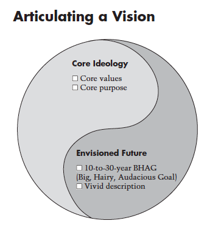

本文是《战略十篇》的第三篇书稿，来自于James C. Collins和Jerry I. Porras刊载于1996年9-10月《哈佛商业评论》的《Building Your Company's Vision》，文章可以在Academia上找到。
伟大公司所求为「基业长青（Build to Last）」，而但凡长盛不衰的公司背后的秘诀是「用核心理念指引和因可见未来激励公司的人（来自于Jim Collins所著《Built to Last: Successful Habits of Visionary Companies》）」。这里的两要素是「核心理念（Core Ideology）」、「可见未来（Envisioned Future）」：
- 核心理念指引人们如何做决策，该做什么、不该做什么、为什么做、怎么做；
- 可见未来激励公司的人朝着共同方向前进，哪怕永远不会达成；

愿景在二者相互作用下逐渐产生，未来即是理念的「因」、也是「果」，二者可以被制定（由始创者），而相互作用的结果是全体员工行为准则（（A [company] Way），这种准则在实践中逐步固化、影响、并持续加强，进而形成了一群人的信念，这种信念区分我们和他们，激励组织成长、用一种无人能够理解的方式成长。
1996年，3M公司分拆了当时依然大量盈利的计算机存储设备业务（录像带、录音带、软盘），最后这部分业务成了现在独立上市的Imation公司，这次分拆成为商业战略的经典案例，最普遍的解释是，3M将「Solving unsolved problems innovatively」当作企业和核心目的（Core Purposes），即3M公司存在的意义，任何可能与其不符的事情都应该停止。
事实上，在当时，保持盈利的存储业务已开始导致其部门主管在公司内发言权过大、利益过于集中，了防止其阻碍公司不断进行的创新和转型，3M公司完成了这次经典的分拆案例。
接下来，3M将重点放在了具有更高透光率的液晶薄膜技术，这个技术在后来为3M公司获得了超过百亿美元的利润，当然，我们并不能将薄膜技术的大获成功简单归于对存储业务的分拆，但可以肯定是，正是这种不断追求最终企业意义的执着奠定了3M公司长久来的成功。
一间企业的核心理念定义着「企业信则（Tenets）」，它超越了市场、产品、服务、技术突破等其他一切元素支撑着企业的存在，它包括了两个部分：
- 核心价值观（Core Values）：我们认为什么是对的、什么是不对的；
- 核心目的（Core Purpose）：我们从哪里来、为什么存在；
一个组织相信什么，它不受时间、市场、以及外界价值的影响。无论外界如何批评和评论、市场如何随时间和技术变化，这些信则始终贯穿企业的行为中。这些信则大多时候是企业竞争力的基础，有时候也被其所累，甚至成为核心竞争力的伤害者。
例如，Sony成立至今的是相信好的产品帮助提升日本文化和国家地位，这一信念让Sony几乎凭借一己之力通过价廉物美和设计卓越的电子产品将日本变成高质量产品的代名词，同时因为太过于「日本」，又无法不断地适应国际数字产业变局。
 （Sony即是日本电子产品卓越的代表、又是被盛名所累迟迟不能跟上全球数字产业变革的步伐）
（Sony即是日本电子产品卓越的代表、又是被盛名所累迟迟不能跟上全球数字产业变革的步伐）
核心理念之上是企业对于可见未来的描述，其中包括：
- 一个BHAG（Big, Hairy, Audacious Goal）目标，通常是大胆的、粗糙的、甚至有些放肆的目标；
- 一个对未来具体的描述。
合在一起，一间公司的愿景逐渐清晰出来。

而这里有个衍生问题：「企业文化从哪里来？」无论是核心理念和可见未来，都没有对企业文化进行定义，最直白的回答是：当相信公司愿景、遵守企业信则的人聚合在一起时，他们的行为就变成了企业文化。
换言之，企业文化是副产品，当我们谈论「文化守护」的时候，不是去鼓励企业文化之下的行为，而是将公司愿景深深植入每位员工的心里，这里包括一份必须遵守的「信则」、而一份深信不疑的「未来」，至于文化本身，则由这一群人的行为所代表。
考虑到公司愿景是企业战略的重要部分，我更愿意认为企业文化是企业战略的副产品。